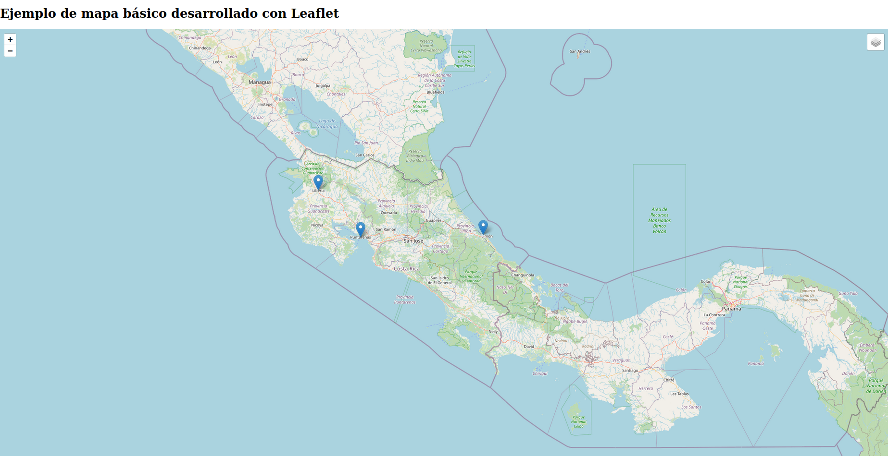

5 Leaflet - biblioteca para desarrollo de mapas interactivos
5.1 Introducción
Leaflet es una biblioteca de programación en JavaScript para hacer mapas en la Web. Es de código abierto y fue diseñada para funcionar en una gran variedad de dispositivos, incluyendo móviles (ej. celulares, tabletas). Su funcionalidad puede ser extendida a través de complementos. Su primera versión fue publicada en 2011 por Vladimir Agafonkin. Junto con OpenLayers y Google Maps, es una de las más bibliotecas más populares para programar mapas en la Web.
El código JavaScript de Leaflet se invoca desde documentos en Lenguaje de Marcas de hipertexto (HTML). Su código fuente se distribuye junto con un conjunto de Hojas de Estilo en Cascada (CSS).
5.2 Documentación
La referencia de la interfaz de programación de aplicaciones (API) de Leaflet contiene la documentación de las clases, métodos, eventos y demás componentes para la programación en JavaScript. El sitio oficial contiene también un conjunto de tutoriales y ejemplos.
5.3 Preparativos para el uso
De acuerdo con la Guía de inicio rápido, para utilizar Leaflet en un sitio web, primero debe incluirse en el código HTML:
- Un enlace a la hoja CSS de Leaflet.
- Un enlace a la biblioteca JavaScript con el código de Leaflet.
- Un elemento div para contener el mapa.
Los archivos JavaScript y CSS de Leaflet pueden descargarse del repositorio de código fuente o referenciarse a través de enlaces a una red de distribución de contenidos (CDN).
5.4 Ejemplo de mapa Leaflet básico
Haga clic en la imagen para acceder al mapa interactivo.

5.5 Clases del API de Leaflet
5.5.1 Clase Map
La clase Map es la clase central del API de Leaflet. Se utiliza para crear un mapa y manipularlo.
// Mapa Leaflet
var mapa = L.map('mapid').setView([10, -84], 7);5.5.2 Método setView()
El método setView() asigna una vista (centro y nivel de acercamiento) y niveles de animación al mapa.
// Definición de la vista de un mapa
map.setView(L.latLng([10, -84]), 10); 5.5.3 Clase TileLayer
La clase TileLayer se utiliza para desplegar capas de teselas.
// Despliegue de la capa de OpenStreetMap
L.tileLayer(
'https://{s}.tile.openstreetmap.org/{z}/{x}/{y}.png?',
{
maxZoom: 19,
attribution: '© <a href="https://www.openstreetmap.org/copyright">OpenStreetMap</a> contributors'
}
)En Leaflet Provider Demo puede verse una lista de proveedores de capas de teselas.
5.5.4 Clase Marker
La clase Marker se utiliza para desplegar marcadores en el mapa.
Puede utilizarse conjuntamente con las clases Popup y Tooltip, para desplegar información en ventanas emergentes.
// Marcador para la Catedral Metropolitana de San José
var catedralSJMarker = L.marker([9.9326673, -84.0787633])
catedralSJMarker.bindPopup('<a href="https://es.wikipedia.org/wiki/Catedral_metropolitana_de_San_Jos%C3%A9">Catedral Metropolitana de San José</a>.<br>Catedral de estilo clásico y barroco. Templo principal de la arquidiócesis católica de San José.<br>Construída entre 1825 y 1827 y reconstruída en 1878.').openPopup();
catedralSJMarker.bindTooltip("Catedral Metropolitana de San José").openTooltip();Varios sitios web ofrecen íconos que pueden utilizarse como marcadores personalizados como, por ejemplo, Font Awesome. Para utilizarlos, siga la documentación en Font Awesome 5 Intro y Basic Use - Font Awesome. Puede ver un ejemplo de su uso en https://tpb729-desarrollosigweb-2021.github.io/ejemplo-mapa-leaflet-iconos-fa/.
5.5.5 Clase Control
La clase Control es la clase base para implementar controles en un mapa. Todas las clases de controles heredan de esta clase. Ejemplos de clases de controles:
- Zoom: botones de acercamiento y alejamiento.
- Attribution: datos de atribución (ej. autoría).
- Layers: activa y desactiva capas.
- Scale: añade una escala.
5.6 Ejercicios
Clone el código del mapa de ejemplo y:
- Agregue dos capas base.
- Agregue un marcador para San José.
- En los marcadores, agregue ventanas de popup con el nombre de cada ciudad (o cantón) y un enlace a la página correspondiente en Wikipedia.
- Personalice los marcadores (al menos uno) con íconos de Font Awsome.
- Agregue un control de escala.
- Publique su mapa en GitHub Pages.